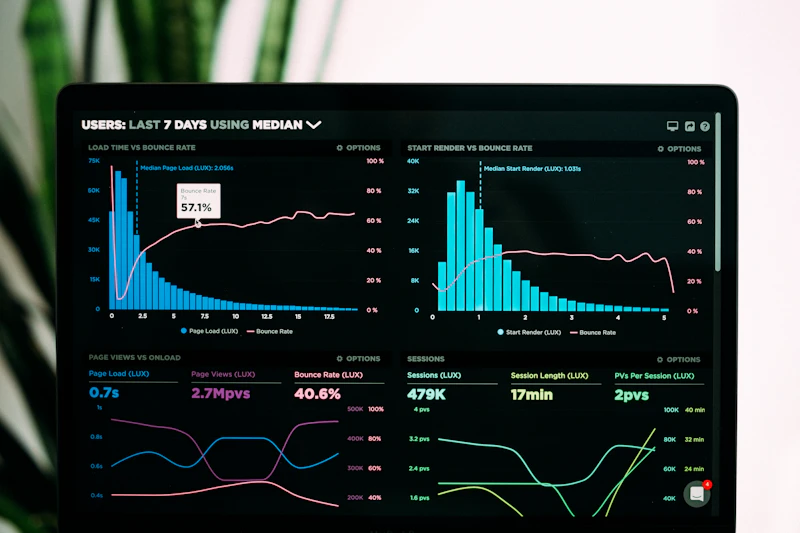
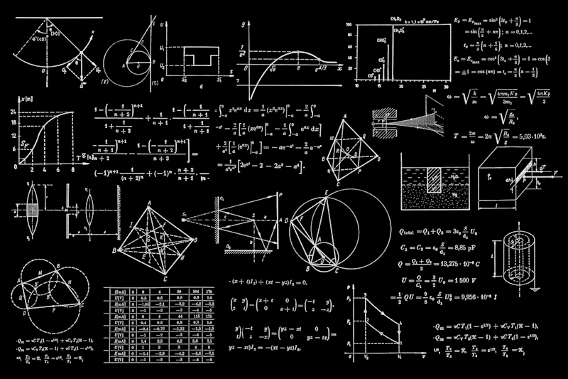
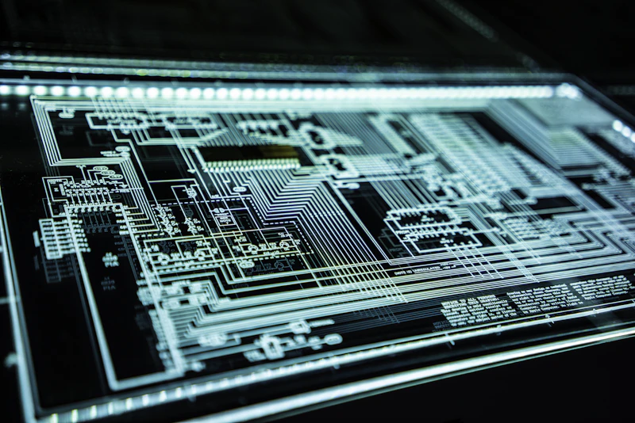

Project Hub.
Discover neural architectures and scalable systems

PlusIT Ventures Hub
A high-density data visualization system designed for real-time neural interface monitoring. The architecture focuses on extreme performance and minimal cognitive load, utilizing a modular bento-style layout for complex telemetry overlays.

News Media Intelligence
An advanced algorithmic optimization platform developed for high-frequency trading. The system utilizes quantum-inspired logic gates to process millions of transactions per second with sub-microsecond latency.
Scalable Cloud CMS
A distributed cloud infrastructure backbone designed for global resilience. This project focused on creating a self-healing node network that automatically redistributes load during peak traffic intervals.
Investigative Data Engine
A premium lifestyle management application for high-net-worth individuals. The interface uses custom physics-based animations and a minimalist bento-grid layout to provide a seamless user experience.

Enterprise BI Portal
A comprehensive cybersecurity audit and hardening protocol for governmental data centers. This project involved direct-memory monitoring and the creation of custom AI defense agents.
Media Syndication Network
A next-generation business intelligence dashboard that turns raw data into interactive 3D visualizations. Designed for C-suite executives who need immediate clarity on complex KPIs.